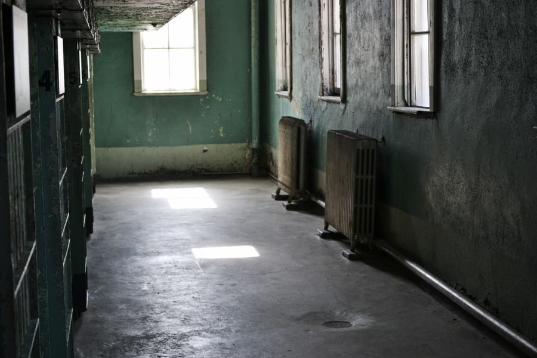

你不知道的德国 · 23
🌡️ 德国供暖与通风
Heizung暖气片、Stoßlüften冲击通风、Schimmel霉菌——德国房子的6个生存秘密
Heizung：德国暖气怎么开？
德国房子的暖气片（Heizkörper）上有一个白色的小圆钮——Thermostat（温控阀），上面标着数字1到5（有的有雪花标志❄️）。这不是温度，而是"档位"：1约12°C，2约16°C，3约20°C，4约24°C，5约28°C。雪花标志是防冻模式（约6°C）。
新来的中国人常常把温控阀拧到5，觉得这样"暖得更快"——这是完全错误的。Thermostat不是开关，而是恒温器：拧到3就是目标20°C，暖气会自动加热到20°C然后保持。拧到5不会暖得更快，只会让房间最终变成28°C的桑拿房。
🇩🇪 Deutsche Originalfassung / 德语原文
Der Thermostat am Heizkörper regelt die gewünschte Raumtemperatur, nicht die Heizgeschwindigkeit. Stufe 3 entspricht etwa 20°C — die ideale Wohnzimmertemperatur. Auf Stufe 5 zu drehen macht den Raum nicht schneller warm, sondern heizt ihn nur auf 28°C auf. Das Thermostat arbeitet als Temperaturregler, nicht als Ein-Aus-Schalter.
Stoßlüften：冲击通风法
Stoßlüften（冲击通风）可能是德国人最执着的生活习惯。它指的是：每天多次、每次5-10分钟，把窗户完全打开（不是微开），让室内外空气迅速交换。然后关窗，让暖气重新加热新鲜空气。
德国人认为"窗户一直微开着"（Dauerkipplüftung）是最愚蠢的通风方式——暖气不断流失，墙壁冷却，但空气交换效率极低。冬天Stoßlüften时建议关掉暖气片的温控阀，开窗5分钟，关窗后再打开。租房合同里通常明文规定租客有Stoßlüften的义务！
💡 Stoßlüften这个词无法简单翻译成"开窗通风"——它特指"猛地打开窗户进行短暂而强烈的空气交换"。在德国，不执行Stoßlüften可能导致你因Schimmel（霉菌）而损失押金。
Schimmel：德国房子最大的敌人
霉菌（Schimmel）是德国租房纠纷的第一大原因。德国房子密封性好（节能标准高），如果通风不当，室内湿气排不出去，就会在墙壁尤其是外墙角落长出黑色霉菌。一旦出现Schimmel，房东会说是你通风不够，扣你押金；你要证明是房子本身的结构缺陷——这是一场经典的德式纠纷。
预防Schimmel的三个黄金法则：1.每天Stoßlüften至少2-3次；2.浴室使用后立刻开窗并把门关上（湿气不要跑到其他房间）；3.室内湿度保持在40%-60%，买个Hygrometer（湿度计）只要几欧元。
🇩🇪 Deutsche Originalfassung / 德语原文
Schimmel ist der häufigste Streitpunkt zwischen Mietern und Vermietern in Deutschland. Gut isolierte Wohnungen brauchen regelmäßiges Stoßlüften, um Feuchtigkeit abzuführen. Drei goldene Regeln gegen Schimmel: 1. Mindestens 2-3 Mal täglich stoßlüften. 2. Nach dem Duschen sofort lüften und die Badezimmertür schließen. 3. Die Luftfeuchtigkeit mit einem Hygrometer bei 40-60% halten.
Nebenkosten里的暖气费
德国暖租的Nebenkosten中，Heizkosten（暖气费）通常是最大的一项——可能占到总Nebenkosten的50%-70%。每年一次，房东会寄给你Nebenkostenabrechnung（附加费结算单），上面详细列出每项费用。
如果你用得比预付的少，会收到退款；如果超出，则需要补交。很多德国人会因为暖气费而谨慎使用暖气：白天不在家时把温控阀拧到2（16°C），回家后拧到3（20°C），睡觉时拧到1-2。每降低1°C大约节省6%的暖气费。
Fußbodenheizung地暖 vs 暖气片
德国新建住宅越来越多地采用Fußbodenheizung（地暖）代替传统的Heizkörper（暖气片）。地暖的优势是舒适度高——脚底温暖、空气不干燥、没有暖气片占空间。劣势是反应慢——地暖升温需要几个小时，不适合频繁调节。
如果你住的是老房子（Altbau），大概率是暖气片。老房子的暖气片通常连接Zentralheizung（中央供暖），整栋楼集中供暖。新房很多采用Wärmepumpe（热泵），更节能环保。
Energieausweis：租房前必看的能源证书
在德国看房时，你有权要求查看Energieausweis（房屋能源证书）。这份文件标注了该房屋的能源效率等级（从A+到H），以及每年每平方米的预期能源消耗（kWh/m²·a）。一间能源效率差的房子（H级）每年的暖气费可能是A+级房子的5倍！
Energieausweis上的指标包括：Endenergieverbrauch（实际能源消耗）和Primärenergiebedarf（一次能源需求）。后者的考量因素更全面——包含建筑保温、窗户类型、供暖系统效率等。老房子（Altbau）如果没有做过保温改造（Dämmung），能源等级通常很低，冬天非常烧钱。
📝 核心词汇表 / Wortschatz
本集文章里的关键德语词汇，配例句加深理解
die Heizung, -en暖气
📌 Im Winter läuft die Heizung von Oktober bis April. — 冬天暖气从10月开到4月。
der Thermostat, -e温控阀
📌 Dreh den Thermostat auf Stufe 3, dann wird es 20 Grad. — 把温控阀拧到3档，就会是20度。
das Stoßlüften冲击通风
📌 Fünf Minuten Stoßlüften sind besser als eine Stunde gekipptes Fenster. — 5分钟冲击通风好过1小时微开窗户。
der Schimmel霉菌
📌 Wenn du nicht richtig lüftest, bekommst du Schimmel an den Wänden. — 如果不正确通风，墙上会长霉菌。
die Nebenkostenabrechnung附加费结算
📌 Die Nebenkostenabrechnung kommt einmal im Jahr. — 附加费结算每年一次。
die Fußbodenheizung, -en地暖
📌 Die Fußbodenheizung braucht länger zum Aufwärmen, ist aber sehr angenehm. — 地暖预热较慢，但非常舒适。
der Energieausweis, -e能源证书
📌 Vor der Wohnungsbesichtigung solltest du den Energieausweis anfordern. — 看房前你应该索要能源证书。
die Dämmung保温层
📌 Eine gute Dämmung spart viel Heizkosten. — 好的保温层能省很多暖气费。
lüften通风
📌 Du musst morgens und abends lüften. — 你必须早晚通风。
Leons Deutschzentrum
📖 想读更多德国冷知识？
51 期「你不知道的德国」深度专栏，都在 Leon 德语学习中心。
📚 进入网站